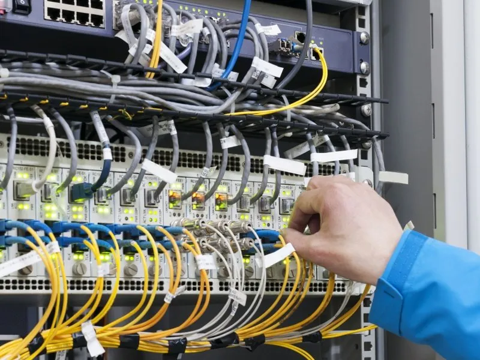

Nous allons, ici développer deux metiers que l'on peut faire après un IUT.
I - Technicien réseau
A quoi consiste-t-il ? En plus de s'assurer du bon fonctionnement du parc informatique, le technicien réseau s'occupe du réseau informatique. Il prépare les matériels (tel que les serveurs, les routeurs) et les logiciels (intégration du système d'exploitation, logiciel d'administration) puis configure le tout. Comment travaille t-il? En équipe, dirigée par un chef de projet. Il est en relation avec les clients et les fournisseurs. Combien gagne-t-il? Un technicien réseau touche entre 1500 et 1750 euros brut Où travaille-t-il? Directement chez un installateur ou au sein d'une grande entreprise utilisatrice ou société de service ou il est plus centré sur la maintenance et l'amélioration des réseaux informatique. Mais des entreprises comme GROUPE BERNIER proposent ce poste directement après un IUT. Perspectives de carrière? Une poursuite de carrière dans le réseau et la télécommunication d'entreprise est à envisager en tant que chef de projet logiciel, responsable d'activité ou ingénieur réseaux. Pour ce faire, une solide expérience est demandée, et dans certains cas, la poursuite d'études de la licence au master d'ingénierie spécialisée est obligatoire.